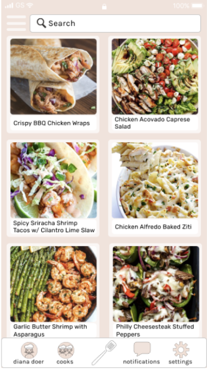
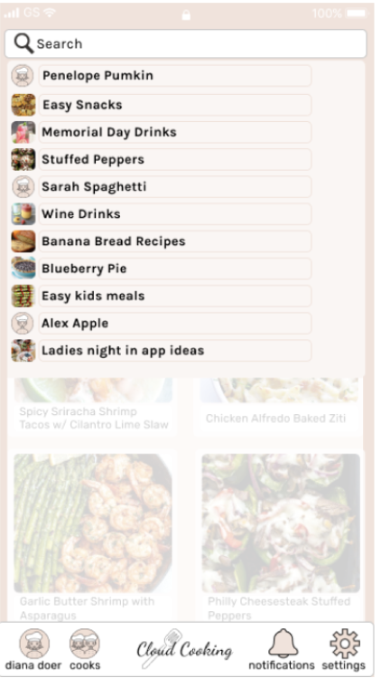
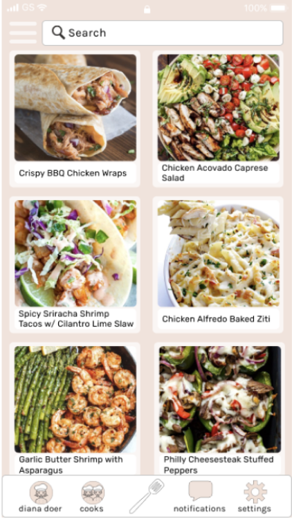
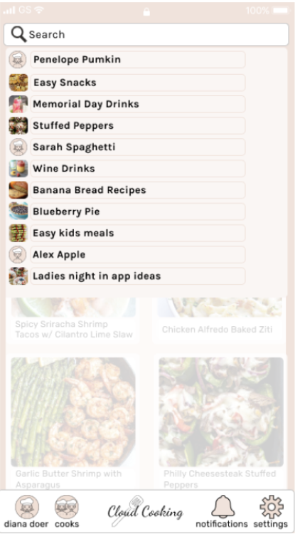

Cloud Cooking is an application designed to allow the user to store, share, save, create, and explore thousands of recipes all in one location. Cloud storage is a relatively new and exciting service that many people and/or businesses seem to be using. While Cloud Cooking is a service that uses cloud storage, it has many more benefits added for the user.
After doing a bit of research, I discovered that there was a need for an application that allows a user to save their own recipes, share recipes, explore new recipes, and connect with other users all in one place.
After a lot of carefully conducted research and development, Cloud Cooking became our solution to the many issues addressed. With the ability to save, share, create, and explore recipes all in one location, our potential users would have all of their problems solved.
I was the main researcher on the project, using many different research tactics to discover the problems that needed to be solved. I completed the branding work on the project, and I designed the application. Working with my mentor from Bloc, and the grading team, I was able to complete this project.
I started with a competitive analysis of three different websites, two mostly utilizing cloud storage. These websites, Pinterest, Google Drive, and Food Network, all have different end goals. Pinterest and Google Drive are both used for cloud storage, but it different ways. Pinterest is used to save and share ideas, written from all sorts of people and businesses, whereas Google Drive is mostly used for creating documents, etc., and sharing with others. Google Drive has very many storing options, (photos, documents, videos, etc.) as well as Pinterest. Google Drive is more focused around your own personal documents, photos, etc. whereas Pinterest focuses on exploring the ideas of other users. Food Network does have cloud storage capabilities, but their site is mostly used to view and explore recipes. You cannot upload your own recipes to be viewed by others, but you can save recipes you like, and add and save your own recipes to your account. After discovering each websites strengths, weakness, opportunities and threats, I was able to highlight what I would like to include in Cloud Cooking and what could be left out.
After figuring out what I would like to include in this application, I conducted a survey to see what potential users would like to have included. Out of the 16 potential users I surveyed, 15 of them have used cloud storage. 93% of the potential users that have used cloud storage have used Google Drive and 73% have used Pinterest. 80% liked that these sites offer the option to save content and share content and 66% liked to be able to share with others. When asked about their cooking preferences, 69% of potential users use recipes, and 69% have saved recipes online. After discovering these things about the potential users surveyed, figuring out what elements needed to be included became more clear.
Creating user personas was an interesting way to see how the users would be using Cloud Cooking. I created two user personas based on the responses I received from my survey. The personas I ended up with were “Sara Shares A Lot” and “Diana Doer. Sara is a 22 year old girl trying to cook recipes that take the shortest amount of time, but look the coolest on her Instagram feed. She is a novice cook but knows all the ins and outs of cloud storage. Diana is a 61 year old retired stay-at-home mom who loves to have all of her friends over for dinner parties. She is advanced in cooking, but lacks in cloud storage experience.
Key Takeaways
Potential users could be completely different from one another but are ultimately looking to do similar tasks. Being able to connect to all types of uses is the utmost goal.
While conducting user stories I was able to decide which elements would be on the top of the list for “Sara Shares A Lot” and “Diana Doer”. I made sure that the highest priority elements, browse recipes, save and share recipes, create an account, and write a review, were to be implemented in this application. While creating the application I noticed a higher priority need for searching for a recipe, and writing a review not being as high on the list.
Creating the user flows helped me figure out how many steps each of the high priority tasks would need. Doing this allowed me to prepare myself for how many screens each task would need, and how all of those screens would connect.
Key Takeaways
After creating the “create an account” user flow, I realized the need for a welcome screen. This screen will be presented after signing in, signing up with google, or signing up with your email. Doing this allows for a more streamlined sign in/up process. The save and share user flows were short, so I created a pop up screen small enough for a “saved” and “shared” so to not distract from other longer user flows that would need more attention.

The branding step helped open up my creative side before starting on the mock ups. Taking this step in between wireframes and mockups helped me take a step back from the wireframes to come back and look at them with fresh eyes. While making the style board, I thought back to the user personas, and what types of things “Sara” and “Diana” would like to see. I browsed many photo websites, spent a lot of time on Pinterest, and came up with a warm pastel color as the main brand color. Using the moodboard to look back to during the creation of the mockups was a helpful reminder of the vibe and aesthetic I was hoping to implement into this application.
Key Takeaways
While sketching the brand logos, I created many different logo ideas making it easier to choose what would work best. In the beginning stages of the logo creation I added “Cloud Cooking” on the inside of the spatula. After making different sizes of the logo I noticed that the text was getting harder and harder to read. After I took the text out of the spatula I was able to make a smaller sized logo while still being able to see the text in a normal size. The brand logo went through many changes, all within a couple of hours. But the biggest change the logo went through was after it was added to the mockups. I realized that the logo I was hoping would work best was a bit too long and skinny for where I wanted it to be placed. I shed the “Cloud Cooking” text from the logo within the navigation bar and from there the application was created.


The wireframes and mockups were by far the most revised step in this process, definitely taking up the most time. Starting with sketches and ending with three sets of high fidelity mockups, this step helped me sculpt the application to look its best. Starting with the wireframes, I was able to decide where on the application I wanted each item to go, using the user stories to make sure that the high priority tasks were easily seen on the dashboard. I started the wireframes as a website and ended the high fidelity mockups as a mobile application, after speaking with my mentor about how this product would be used and where (most likely in the kitchen - while cooking) we decided that a mobile application would be more practical. Having the wireframes as a website firsthelped me decide how to make sure the mobile application fit
 





User testing each step of the design process allowed me to see things that I usually would not have noticed on my own. One of the many things I took from the first round of user testing, on the Figma wireframes, was that the potential user did not understand how to get out of some of the pop up pages without a back button. Adding the back button allowed the user to use the outside of the screen, as I had imagined the user would, but also use the back button that they are used to. After my second round of prototype testing, I had a few more changes suggested that needed to be addressed. The logo on the navigation bar made it
Each step helped me decide which elements were necessary, which could be removed, what was too small, what needed a color change, and so forth. I am very fortunate to have people close to me to test each step of the process on, which helped immensely. I had some doubts going into this project that my idea for Cloud Cooking would not work the way I had hoped. With each step, and the help from my mentor, I was able to make my idea work the way I had intended it to. I was surprised most to realize how different designers make the website application from the mobile application, without it appearing to be different. I spent a lot of time looking at the Pinterest website and application, to see how their designers layed out